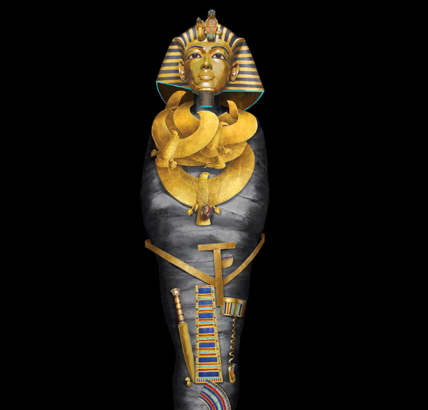

Today's Picks

History & Culture
Easter Island's iconic statues remain at risk after fire

History & Culture
Who was King Tut?
Science Coronovirus Coverage
Easter Island's iconic statues remain at risk after fire

Magazine
How was King Tut's tomb discovered 100 years ago?

Magazine
King Tut's mummy hid many treasures. This graphic unwraps them

Behind the Cover
How an obscure statue became our face of a King Tut anniversary